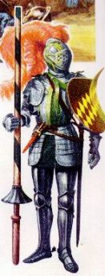
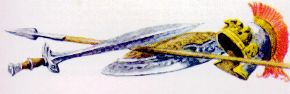
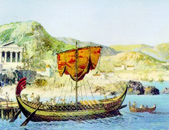
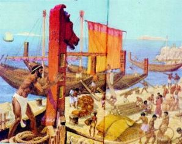
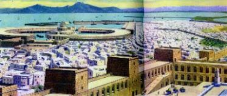

Comme ils étaient dans un temps de peu de travail, avec la paix dans le territoire Juif entier, il a parlé avec le commandant de la Garnison sur la possibilité dáabsenter du travail pour 60 jours pour visiter ses parents et amis dans son ville natale.
L'officiel Cornelius, reconnaissant les bonnes qualités du soldat, son compétence dans les missions que il a dágagé pendant les huit années de légion et ne manquer jamais les ses engagements, a entendu avec sympathie la demande et a promis à lui donner une réponse très bientôt.
Longinus l'a remercié et est allé pour l'hébergement pour se joindre à ses compagnons militaires.
Dans la place où il gardait les ses vêtements et objets personnels, a disposé aussi la lance dans un coin de l'armoire. Il a observé que la tache de sang dans la lance et aussi bien la tache dans la paume de son main étaient immuables. Il s'est assis sur le lit, a regardá la main attentivement et a examiné le sang sur la lance. Une sensation de tristesse et bonheur se mélangeait dans son cœur et le convainquait de qu'une sympathie très sincère pour cela l'Homme Crucifié commençait à naître. Il se souvenait des mots de Yossef, de l'enthousiasme de Lisias et de la Face dáfiguré de JÉSUS. Il a perçu que toutes les fois qu'il pensait dans LUI, la image du SEIGNEUR aussitôt apparaissait dans son esprit et le laissait excité, la pulsation du cœur accélérerait et il avait un grand dásir de le connaître mieux.
Affectueusement il a couru la main sur la lance et, pensivement, a resté là pour longtemps. Il sentait un grand plaisir avoir cet objet dans ses mains. Pourquoi cet objet était un instrument très singulier, qui devait être gardá diligemment et avec beaucoup de respect, parce que c'était plus une mémoire vivante du FILS de Dieu parmi nous.
Malgré qu'il a été l'auteur de la profanation du Corps mort de NOTRE SEIGNEUR, clouant la lance dans le Cœur DE LUI, il accréditait qu'il serait pardonné par DIEU, dá à la grandeur infinie de la Miséricorde Divine, et pour cela, il devrait chercher une façon effective de réparer cette offense, pour son propre satisfaction intérieure, et aussi, pour laisser l'esprit dans la paix.
Il a enveloppé la lance avec une tissu et l'a gardá dans son l'armoire. Pour travail, il a demandá une autre lance, en disant que le son lance avait perdu dans la "mission du Golgotha". Le chargé a accrédité, mais le Centurion doit payer par la nouvelle lance dont valeur a été dácompté de son salaire.

Quelques jours plus tard, le officiel Cornelius l'a appelé et a dit que l'autorisation par lui être absent de Jérusalem avait été concédáe. Longinus a resté heureux, et dans ce même jour il est allé à la maison de Yossef pour dire au revoir et remercier pour tout qu'ils avaient fait pour lui. Comme l'ami n'était pas là, il a dácidá d'attendre et a resté pour le dájeuner.
Après le repas, les deux sont sortis à la partie de devant de la maison dans la recherche d'une place où ils aient pu parler sans que aient été interrompus. Alors, le Centurion a dit à son ami tout la histoire sur la "mission du Golgotha", inclusivement il a montré son main droite taché avec le sang de LE CHRIST et a réveillé son immense regret et la tempête de craintes qu'a inondáes son âme.
Yossef était très impressionné... Il a étreint et a consolé son ami et le a rempli d'espoir dans la miséricorde infinie du SEIGNEUR.
Depuis ils ont parlé longtemps sur différents sujets et aussi, ils ont dit un affectueusement au revoir.
Dans ce même jour, Longinus a parvenu une place dans un véhicule d'un compagnon de la légion et a été conduit à Caesarea, port Israélien dans la Méditerranée.


